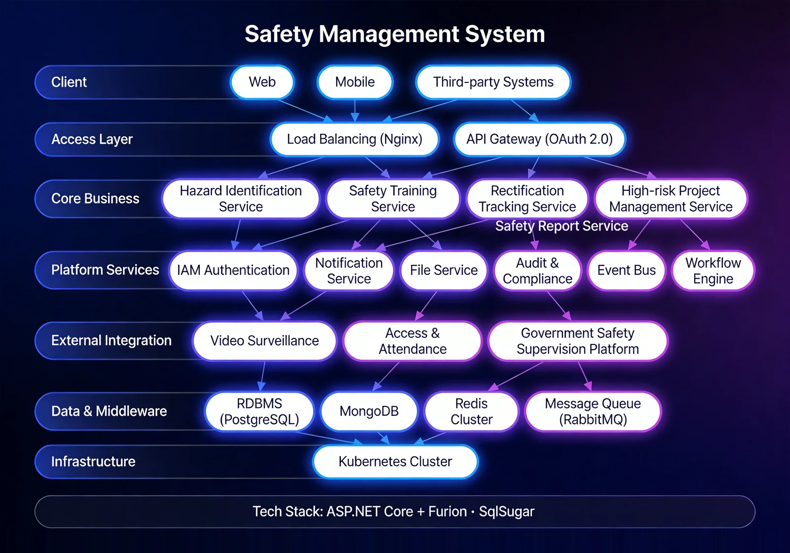

The Safety Management System is a comprehensive platform for civil-engineering site safety. Addressing the pain points of complex site environments, high safety risks, and the difficulty of systematic risk identification and control under traditional management, the system covers daily inspections, hazard records and rectification tracking, temporary electrical control, and SOS emergency response. With support for Hausa and Yoruba West African indigenous languages, the system achieves risk identification, hazard rectification, and emergency response closed loops, helping enterprises systematically identify and control safety risks, reduce accidents, and protect site personnel and equipment.

Key Features
The system covers safety inspection, reward/penalty, electrical work orders, and SOS — four core modules forming a closed-loop safety management.
Safety Inspection
Plan and execute daily or special safety inspections with on-site hazard records, photo upload, rectification assignment, and verification.
Reward/Penalty
Penalty records for safety violations, or reward registration for outstanding teams and individuals.
Electrical Work Order
End-to-end management of temporary site electrical requests: application, approval, execution, and acceptance.
SOS
Quick emergency-call feature for urgent situations.
System Architecture

Safety Closed Loop
The system adopts a closed-loop safety architecture: inspection → hazard record → rectification assignment → verification. Combined with AI cameras for real-time detection of helmet, reflective-vest, and hazard-zone intrusion, and integrated with access control and video surveillance, it builds a multi-layered site safety protection system.
Application Scenarios
Suitable for daily safety inspection closed loop, temporary electrical control, safety behaviour incentive, and emergency SOS response.

Daily Safety Inspection
Plan and execute daily or special safety inspections with on-site hazard records, photo upload, rectification assignment, and verification.

Temporary Electrical Control
End-to-end management of temporary electrical requests: application, approval, execution, and acceptance.

Safety Behaviour Incentive
Penalty records for safety violations, or reward registration for outstanding teams and individuals, building a positive safety culture.

Emergency SOS Response
SOS quick emergency call for urgent situations with linked response.
Advantages & Cases
Local Compliance Adaptation
Adapts to the requirements of local safety regulations in Nigeria, generates compliance reports to meet regulatory needs, and reduces legal risks.
AI Intelligent Recognition
Combined with AI cameras, it realizes real-time recognition and automatic alarm for safety helmets, reflective vests, and intrusion into dangerous areas, shifting hidden danger discovery from passive to active.
Multilingual Accessibility
Supports three languages of Chinese, English and French, as well as local ethnic languages such as Hausa and Yoruba, ensuring that local employees can use the system without barriers.
Closed-loop Emergency Response
SOS quick help request and emergency response process are seamlessly connected, shortening the handling time of emergencies and ensuring the safety of on-site personnel.
Hidden Danger Rectification Tracking
The entire chain of safety hidden dangers from recording, grading, issuance, rectification to acceptance forms a closed loop, with clear responsibilities assigned to individuals and specific deadlines set.
Standardized Daily Inspection
Supports setting inspection plans according to risk areas, with on-site photo taking, signing, and scoring completed in one step, realizing standardized safety management.
Requirement Research
Gain in-depth understanding of construction site safety management needs and existing processes, and sort out risk areas, inspection routes and emergency response mechanisms.
System Deployment
Supports on-premises deployment and cloud deployment, combines with AI cameras to realize intelligent recognition, and adapts to the on-site construction environment.
Training and Launch
Provides tiered training for administrators, safety officers and on-site personnel, covering hidden danger recording, inspection filling, alarm handling and report usage.
Launch Acceptance
Acceptance is carried out in three stages: safety process testing, AI recognition verification, and alarm linkage, ensuring the system is stable before official delivery.
Safety Management for Rail Transit Projects Such as a City Light Rail Project
Background: Rail transit projects involve high-risk operation scenarios such as deep foundation pits, shield tunneling, and elevated works, resulting in great pressure on safety management.
Challenges: The construction site environment is complex, traditional manual inspection is difficult to achieve full coverage, safety hidden dangers are discovered with lag, and the emergency response chain is long.
Solution: Deploy a safety management system, through daily inspection, hidden danger rectification closed loop and AI intelligent recognition, to realize active risk discovery and rapid response.
Result Data: The timeliness of safety hidden danger discovery is improved, the accident rate is effectively reduced, and the emergency response time is shortened.
Customer Testimonial: ——